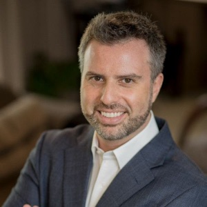
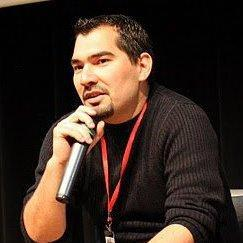
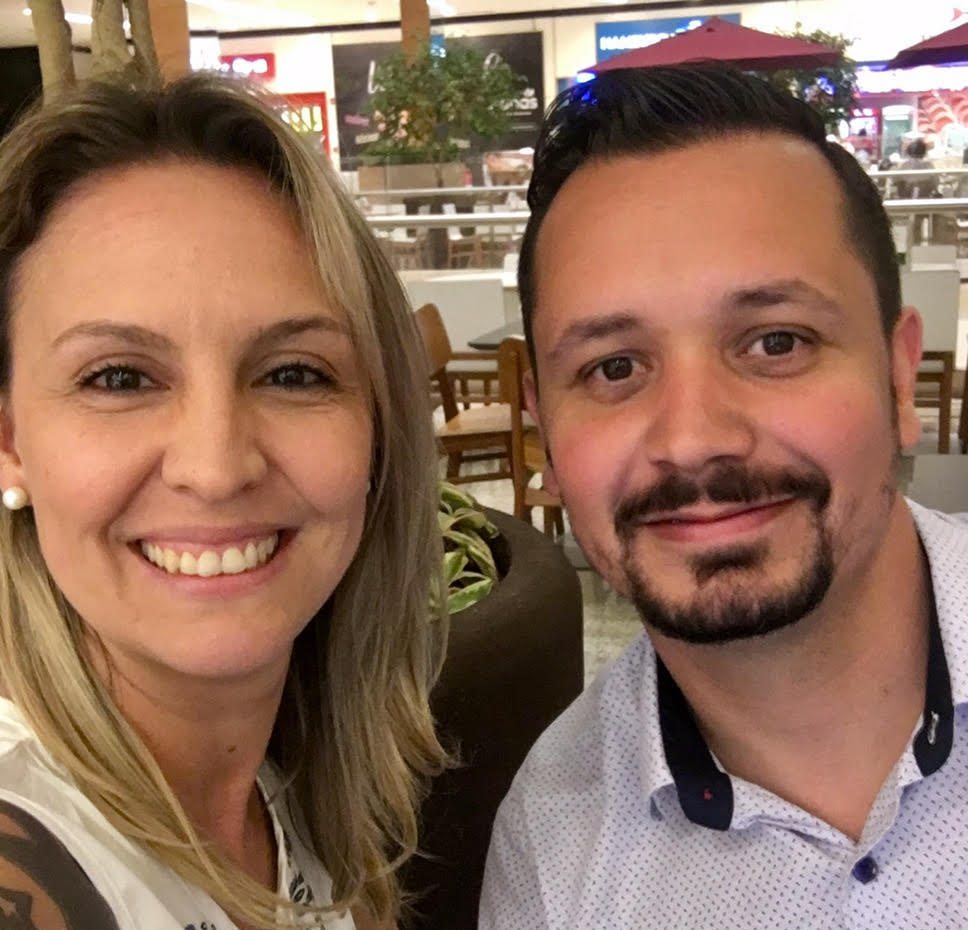
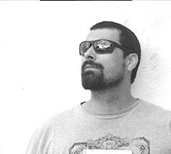
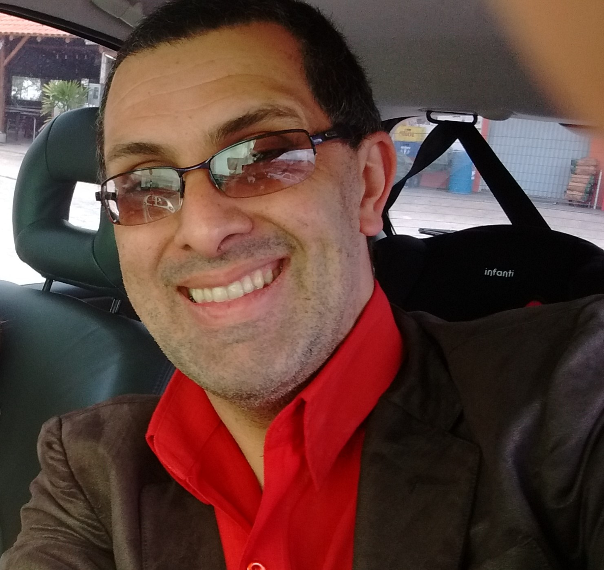
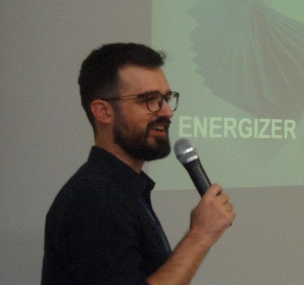
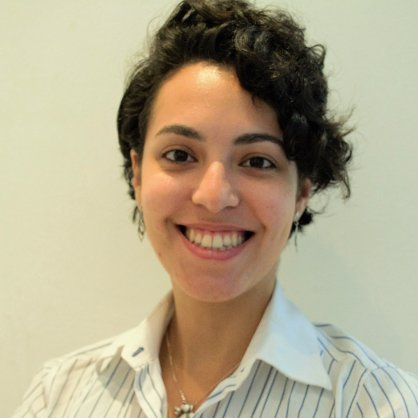
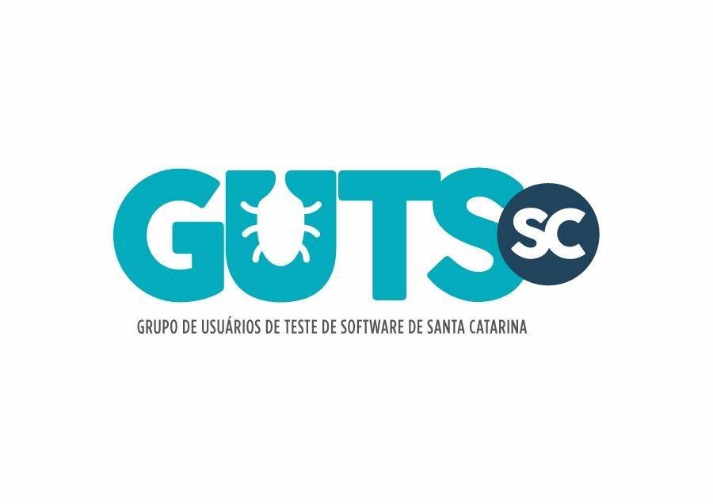

Sobre
A conferência Agile Floripa nasceu através da comunidade que existe desde 2008 e atualmente a conferência que está em seu segundo ano, já se tornou o maior evento recorrente do sul do Brasil sobre métodos ágeis de desenvolvimento de software
O evento não possui fins lucrativos e é organizado por especialistas no assunto que compartilham o objetivo de incentivar e disseminar a cultura.
Este evento veio como meio de fortalecer a comunidade de software em Florianópolis e Santa Catarina, além de proporcionar espaço para que as grandes atividades e inovações realizadas no nosso estado sejam compartilhadas de maneira transparente e horizontal!
Dando espaço aos palestrantes da terra e recebendo convidados de comunidades parceiras e profissionais com grande experiência, o Agile Floripa tem por objetivo se firmar no calendário dos eventos de agilidade nacionais e se tornar referência de conhecimento e compartilhamento.
Nossas atividades são organizadas por um comitê voluntário que dedica tempo e expertise acreditando na cooperação e multidisciplinaridade. Nossas contas são abertas e a Agile Alliance Brazil nos auxilia com administração e emissão de notas fiscais - todo o lucro é revertido para iniciativas da comunidade.
Curso
-

Lean Business Analysis for Product Owners.
Desenvolver novas capacidades analíticas e gerenciais em Gestores de Produto (Product Owners) e Analistas de Negócios a partir de conceitos, práticas e ferramentas da Lean Business Analysis, com o objetivo de acelerar a conquista de melhores resultados no desenvolvimento de produtos digitais e projetos de negócio.
Luiz Cláudio Parzianello
Consultor, palestrante e professor universitário. Atua na área de TI há mais de 25 anos e de gestão há 15 anos, sendo um dos pioneiros na adoção e disseminação das Metodologias Ágeis no Brasil. Tornou-se especialista em resolução de problemas complexos de negócio utilizando pensamento sistêmico e modelos de análise (Lean Business Analysis, autor) e de gestão (Agile Management). Atuou para empresas como Grupo RBS, Sicredi, Unicred, Banrisul, Citibank, ThyssenKrupp Elevadores, FAURGS, REFAP/ Petrobrás, GetNet, Ministério do Planejamento de Angola, entre outras. Engenheiro Eletricista pela PUCRS e Mestre em Sistemas Eletrônicos pela USP, é sócio-fundador da empresa Surya Gestão Digital e professor em MBA nas instituições UniRitter, UNISC, IMED e CESUSC. Foi fundador e presidente do IIBA Porto Alegre Chapter (International Institute of Business Analysis) e um dos autores da Agile Extension to the BABOK (Business Analysis Body of Knowledge), projeto conjunto entre IIBA e Agile Alliance.
Valor: Promocional (até 16/Nov): R$ 790 / Agile Floripa (até 30/11): R$ 890 / Normal (até 04/12): R$ 990
Data: 7 e 8 de Dezembro
Horário: 09:00 às 18:00
Local: SENAI Florianópolis (CTAI) - Florianópolis, SC -

Treinamento Kanban (KMP I) + Ingresso FREE para o 4º Agile Floripa (válido enquanto houverem vagas no evento)
Aprenda a melhorar os processos da sua empresa de forma evolucionária, lidando com a resistência a mudanças e ajustando aos objetivos da sua organização. A Aspercom é pioneira no Brasil na aplicação do Método Kanban em pequenas, médias e grandes empresas nos mais variados setores. Com a nossa experiência você aprende neste treinamento como melhorar o seu processo de forma evolucionária - lidando com a resistência natural das pessoas a mudanças - tornando seu processo ajustado aos objetivos de negócio da sua organização! Este treinamento é certificado Lean-Kanban University (Kanban Method Professional I).
Rodrigo Yoshima
Técnico em Processamento de Dados e Bacharel em Administração de Empresas e Economia. É Advanced Accredited Lean Kanban Trainer (AAKT) e Kanban Coach Professional (KCP) pela Lean-Kanban University. Com mais de 20 anos de experiência na área de tecnologia, Rodrigo atua como consultor e instrutor em melhoria de processos tendo implantado métodos Lean e Agile em mais de 200 equipes em mais de 30 empresas. Casado, pai e velejador.
Valor: Early Bird (10 vagas ou até 15/Nov): R$ 1.150 / Normal (10 vagas ou até 5/Dez): R$ 1.350
Data: 7 e 8 de Dezembro
Horário: 08:00 às 17:00
Local: CIASC - R. Murilo Andriani, 327 - Itacorubi, SC, 88034-902
Trilha 1 - Palestras
| Horário | Tema | Descrição |
|---|---|---|
| 08:15 | Credenciamento | |
| 08:45 | Abertura | |
| 09:00 | Keynote: Pragamatismo, Agilidade e Resultados na Gestão de Negócios | O pragmatismo sempre esteve no discurso dos profissionais que escreveram e fizeram o Manifesto Ágil se tornar uma realidade mundial. Da mesma forma, acreditamos que o crescimento ou a sobrevivência de negócios no século XXI depende de uma gestão focada em resultados, que vai além da implantação de práticas e ferramentas ágeis. A gestão é responsabilidade de todos e esta palestra irá demonstrar a maior mudança que ainda falta no mundo empresarial. |
| 10:00 | Coffee break | |
| 10:30 |
 The HEART, Osborn! First, we attack his HEART! Lições e Estratégias Aprendidas em 7 anos de Agilidade
ArcTouch
The HEART, Osborn! First, we attack his HEART! Lições e Estratégias Aprendidas em 7 anos de Agilidade
ArcTouch
|
A medida em que métodos vão surgindo para endereçar problemas, cada vez mais de alto nível, perdemos inconscientemente a conexão com a essência, que é resolver os problemas de negócio. Frameworks são importantes, mas o sucesso das práticas passa pela compreensão de todo contexto do negócio e a natureza do trabalho. De que agilidade estamos falando * Faça a coisa certa e somente a coisa certa. * Primeiro a eficácia. A eficiência é pressuposto. * Ciclos de feedback curtos. * Todas as fichas na coisa certa. O aprendizado Ao trabalhar com métodos ágeis desde 2010, houve falhas e bons resultados. Por conta do ambiente (contexto), neste período, foram constatadas uma série de questões e, dentre estas, 10 lições aprendidas: 1. Inicie pelo Mindset 2. De a devida importância ao contexto 3. Respeite os estágios de aprendizado 4. A compreensão vem com a vivência 5. Saiba que nem toda pipoca estoura 6. Procure excelência técnica para obter sustentabilidade 7. Como gestor mantenha o foco no bastão 8. Seja um organismo e não um mecanismo 9. Diga o quê, não como 10. Traga a organização para o jogo. |
| 11:10 |  Como a Governança de TI pode acelerar a transformação ágil Unicred | Com o novo modelo e mindset de agilidade, existem algumas áreas que devem caminhar junto e apoiar este novo formato de trabalho e a Governança tem papel fundamental para essa transformação, apoiando de forma que os times estabeleçam transparência, confiança e principalmente colaboração. Detentora do alinhamento entre negócios e TI, a Governança tem informações e controles que podem acelerar este movimento. |
| 11:50 |
Aprimorando a administração pública: Métodos ágeis em prol do príncípio da eficiência na Administração Pública
CIASC
|
A palestra pretende apresentar a experiência de adoção de técnicas ágeis por um conjunto de times do Centro de Informática e Automação do Estado de SC (CIASC). A intenção é que se evidenciem os benefícios que esse esforço propicia para o atendimento ao Princípio Constitucional da Eficiência na Administração Pública, no intento de estimular que práticas análogas se propaguem para outros grupos voltados a atender necessidades dos cidadãos catarinenses. |
| 12:30 | Almoço | |
| 14:00 | Em breve | |
| 14:40 |  Pare de priorizar e começe a selecionar Taller | Priorização significa que existe uma fila fixa de items que devem ser processados. No contexto do desenvolvimento de software de escopo aberto, não priorizamos um conjunto de demandas, e sim selecionamos as melhores com critérios definidos com o cliente dentro de uma nuvem de ideias. O objetivo dessa palestra é mostrar como criar e usar esses critérios para ter uma melhor seleção das demanas que serão criadas pelo time. |
| 15:20 | Os Desafios e Benefícios da Agilidade para Times Remotos - Dicas e Técnicas para Garantir Resultados Expressivos. Intelbras | O objetivo desta palestra é apresentar um case de como estamos conseguindo emergir o mindset ágil para 30 pessoas, de 7 times remotos, em um projeto de P&D da Intelbras. Quais os principais desafios enfrentados? Quais as práticas que estão impulsionando as pessoas a serem mais ágeis? Aplicando benefícios do Lean, SAFe, Scrum e Kanban, estamos obtendo resultados expressivos de produtividade e engajamento, auxiliado por métricas de fluxo, projeções probabilísticas, ferramentas de gestão e indicadores de mercado. Atualmente existem tantas boas práticas, métodos, metodologias e frameworks, que a real essência da agilidade acaba sendo esquecida. Seguir uma linha sem considerar o benefício de outra pode se tornar o seu fracasso. Então reflita sobre isso, avalie o seu contexto atual, considere possibilidades, sem julgar que isso ou aquilo é errado. Se esta dando certo? Ok! Porquê não? O verdadeiro crime é não seguir os seus princípios independente da metodologia aplicada. |
| 16:00 | Coffee break | |
| 16:30 |  Kanban no Marketing - Como começar? Senior Sistemas | Você trabalha com marketing? Tem muitos projetos em paralelo? Se perde no meio de tanto trabalho? Não consegue ter visibilidade de tudo que está fazendo? E ainda por cima não consegue mostrar o resultado do seu trabalho? Essa palestra é para você. Começamos em junho/17 a aplicação de método Kanban no time de Marketing (12 pessoas) aqui na Senior Sistemas (Blumenau/SC), do zero mesmo, aplicando os princípios e as práticas. O time não tinha nenhum método estruturado de trabalho e está adorando o método Kanban. Você vai entender que para começar basta dar o primeiro passo! |
| 17:10 |  Manifesto para Desenvolvimento Ágil de ATIVIDADES NÃO Software SERPRO | O Manifesto para Desenvolvimento Ágil de Software precisa ser reescrito? Provavelmente não. É possível ser ágil além do desenvolvimento e o Management 3.0 pode te ajudar nisso. A palestra ambienta o expectador numa discussão do Agile Europe 2016, onde os participantes reclamavam da falta de frameworks ágeis para áreas não software. Passo por uma reflexão sobre “Indivíduos e interações mais que processos e ferramentas” e apresento o Management 3.0 como uma ferramenta para áreas não software, fazendo um paralelo com os princípios do Manifesto Ágil. |
| 17:50 |
Agilidade em Suporte de 2º nível
Softplan
|
A ideia é trazer ao público a experiência da aplicação de conceitos ágeis, gestão de pessoas e a Filosofia de Gestão em uma equipe de Suporte de 2º nível com 19 integrantes que nunca ouviram o que é Ágil. Discussão sobre acertos e erros e também apresentar os resultados através dos indicadores de acompanhamento. Como foi possível melhorar o atendimento de SLA, prioridades, e também o clima de trabalho com o uso da agilidade. Mudança de mindset da equipe com foco na entrega de valor no atendimento ao cliente, e um desafio maior, como foi organizar tudo isso com pessoas trabalhando remotamente em 5 cidades diferentes. |
| 18:30 | Encerramento + Sorteios e Happy Hour \o/ |
Trilha 2 - Workshops
| Horário | Título | Instrutor | Descrição |
|---|---|---|---|
| 10:30 | STATIK - Começando com Kanban (em escala) na próxima segunda-feira | Rodrigo Yoshima | Poucas pessoas sabem, mas o modelo STATIK é uma das ferramentas de coaching mais poderosas do Kanban. O STATIK é uma maneira sistemática e objetiva de começar a mapear sua corrente de valor, desenhar seu board kanban, habilitando a colaboração e potencializando a melhoria do fluxo na melhor forma Kaizen. Quer começar a desfrutar dos benefícios do Kanban como agilidade, previsibilidade e governança na próxima segunda-feira, mesmo que tenha centenas de pessoas? Então este workshop é para você! |
| 12:30 | Almoço | ||
| 14:00 | A importância da empatia na construção de produtos de valor | Day Andrade, Andressa Chiara | Há diversas técnicas para ajudar na criação de um excelente produto. No entanto, nosso esforço pode ser em vão se não aproveitarmos a criatividade do time, entrarmos em consenso sobre nossos objetivos, prioridades e validarmos nossas hipóteses, escutando nossos usuários. Neste workshop você aprenderá técnicas de consenso 100% na prática, buscando, através de muita empatia, alinhar as demandas dos stakeholders com as necessidades dos usuários e da equipe envolvida. Público alvo: pessoas que trabalham ou gostariam de trabalhar com criação de produtos e em projetos, dentro e fora de TI. |
| 16:00 | Coffee break | ||
| 16:30 | Refactoring Conversation Smells | Luiz Claudio Parzianello | |
| 18:30 | Encerramento + Sorteios e Happy Hour \o/ (no auditório principal) |
Palestrantes
-
09:00 Keynote: Pragamatismo, Agilidade e Resultados na Gestão de Negócios
Luiz Claudio Parzianello
Consultor, palestrante e professor universitário. Atua na área de TI há mais de 25 anos e de gestão há 15 anos, sendo um dos pioneiros na adoção e disseminação das Metodologias Ágeis no Brasil. Tornou-se especialista em resolução de problemas complexos de negócio utilizando pensamento sistêmico e modelos de análise (Lean Business Analysis, autor) e de gestão (Agile Management). Atuou para empresas como Grupo RBS, Sicredi, Unicred, Banrisul, Citibank, ThyssenKruppElevadores, FAURGS, REFAP/Petrobrás, GetNet, Ministério do Planejamento de Angola, entre outras. Engenheiro Eletricista pela PUCRS e Mestre em Sistemas Eletrônicos pela USP, é sócio-fundadorda empresa Surya Gestão Digital e professor em MBA nas instituições UniRitter, UNISC, IMED e CESUSC. Foi fundador e presidente do IIBA Porto Alegre Chapter (International Institute of Business Analysis) e um dos autores da Agile Extension to the BABOK (Business Analysis Body of Knowledge), projeto conjunto entre IIBA e Agile Alliance.
-
10:30 The HEART, Osborn! First, we attack his HEART! Lições e Estratégias Aprendidas em 7 anos de Agilidade
Paulo Antiquera
Tenho desenvolvido software por quase toda minha vida, profissionalmente a uns 20 anos. Nos últimos 7 anos venho procurando formas mais eficazes de gerar valor aos clientes. Nesta jornada já misturei práticas das mais diversas fontes: Xp, Kanban, Scrum, PMI... Como sou apaixonado por software já fiz de tudo um pouco na área: * Escrevi muito código (<3): Delphi, Asp, PHP, C, C++, Java, Javascript, Shell... * Tive que automatizar tarefas (principalmente builds), cuidar de repositórios de fontes, fazer muito merge, liberar versões de sistema, subir ambientes para teste e produção... * Já tive que montar arquitetura de sistemas, backend, frontend, desenhar armazenamento de dados, integração entre sistemas (XML para cá, json para lá, protocolo, socket, tcp, udp...) * Certa vez quando olhei para minha mesa tinha uma carta dizendo: parabéns você foi promovido, agora olha para frente, você precisa dar um jeito de estes 40 caras na sua frente deixarem os nossos clientes satisfeitos... * Negociei escopo, negociei prazo, negociei orçamento, negociei estratégia, conheci os stakeholders, anotei que eles queriam, fiz aquele diagrama de sequencia que os devs precisavam, escrevi a história épica, quebrei em features, depois em user stories... * Conversei bastante, sobre excelência técnica, testes automatizados, ciclos de feedback curtos, sobre pagar os débitos técnicos, sobre autonomia, entrega contínua, fluxo, melhoria contínua... E o melhor, tudo isto continua fazendo parte da minha vida o/, mas não ao mesmo tempo. Agora gosto de fazer uma coisa por vez, a coisa certa e somente a coisa certa!
-
11:10 Como a Governança de TI pode acelerar a transformação ágil
Paula Martins & Clóvis Melo
Paula Martins: Há 15 anos na área de TI, de desenvolvedora, analista de testes, líder até Analista de Governança e Agile coaching. Formada em Gestão em tecnologia da informação, certificação em Coaching Comportamental em TI. Ministrante de treinamentos internos empresarial, participante e palestrante do grupo de usuários de testes de software em Porto Alegre. Clóvis Melo: Experiência com Governança de TI de 5 anos em Liderança e acompanhamento do Planejamento Estratégico, definição e apuração dos principais indicadores de desempenho da TI. Gerenciamento dos Processos de TI com avaliação de Riscos e acompanhamento do nível de maturidade dos processos com utilização da metodologia COBIT e ITIL.
-
11:50 Aprimorando a administração pública: Métodos ágeis em prol do príncípio da eficiência na Administração Pública
Raphael Tucunduva Gonçalves
-
14:00 Em breve
-
14:40 Pare de priorizar e começe a selecionar
Helal Ferrari Cabral
Analista de negócios apaixonado por processos. Através do desenvolvimento emergi para o mundo dos negócios de tecnologia :-), CERTIFIED PPTO.
-
15:20 Os Desafios e Benefícios da Agilidade para Times Remotos - Dicas e Técnicas para Garantir Resultados Expressivos.
Allex Espindola Erckmann
Natural de Florianópolis/SC, graduado em Gestão da Tecnologia da Informação pelo SENAC e Pós Graduado em Gerenciamento de Projetos de TI pela Unisul, é certificado SAFe Practitioner e SAFe Agilist pela Scaled Agile Academy. Trabalhou durante 5 anos com gestão de projetos tradicionais e desde 2012 trabalha com métodos ágeis. Participou do comitê estratégico de implantação do SAFe na Softplan, onde atuou durante 6 anos como Scrum Master e RTE (Release Train Engineer). Atualmente, desempenha o papel de Scrum Master e Agile Coach em uma imersão ágil em escala, para projetos de P&D da Intelbras, em parceria com o CITeB (Centro de Inovação e Tecnologia de Biguaçu/SC).
-
16:30 Kanban no Marketing - Como começar?
Coaracy Silva
Minha missão é ajudar a pessoas a se engajar e a atingir resultados. Tenho mais de 20 anos de experiência em gestão empresarial e vivo o mundo de projetos de software a 12 anos. Faço parte da equipe responsável pela transformação ágil na Senior Sistemas.
-
17:10 Manifesto para Desenvolvimento Ágil de ATIVIDADES NÃO Software
Ricardo Delcastanher
Bacharel em Ciências da Computação, especialista em Software Livre, Certified ScrumMaster e Kanban Management Professional. Empreendedor serial durante mais de uma década, atualmente é Agile Coach no SERPRO em tempo integral. Valoriza pessoas e suas interações mais que processos e ferramentas.
-
17:50 Agilidade em Suporte de 2º nível
Gabriel Pacheco
Profissional com mais de 10 anos de experiência em TI na área de desenvolvimento de software, em empresas de pequeno e grande porte e também em startup no exterior, atuando ao longo da carreira como Coordenador, Líder, Agile Coach, Scrum Master, Gestor de Projetos, Analista de Requisitos, Desenvolvedor e Consultor
-
10:30 Workshop: STATIK - Começando com Kanban (em escala) na próxima segunda-feira
Rodrigo Yoshima
Técnico em Processamento de Dados e Bacharel em Administração de Empresas e Economia. É Advanced Accredited Lean Kanban Trainer (AAKT) e Kanban Coach Professional (KCP) pela Lean-Kanban University. Com mais de 20 anos de experiência na área de tecnologia, Rodrigo atua como consultor e instrutor em melhoria de processos tendo implantado métodos Lean e Agile em mais de 200 equipes em mais de 30 empresas. Casado, pai e velejador.
-

14:00 Workshop: A importância da empatia na construção de produtos de valor
Day Andrade
Scrum Master na Concrete, trabalha desde 2010 na área de TI e possui formação em Ciência da Computação. Coach pela Metaforum e pela SBC, Facilitadora, Embaixadora Choice, ama Comportamento Humano e participar de projetos de impacto social.
-
14:00 Workshop: A importância da empatia na construção de produtos de valor
Andressa Chiara
Gerente de Produto (PO) na Concrete, trabalha com produtos digitais há 9 anos, liderando projetos em TI para web /mobile. Certificada como PMP, CSM, PSMI, CSPO, Lean-Kanban. Contribui com iniciativas de inclusão como a Code Like a Girl.
Parceiros
-

-

-

-

-

-

-

-

- 
-

Local do Evento (Trilha 1 e 2)
Rodovia SC 401, 3730 - Saco Grande, 88032-005. Florianópolis, Santa Catarina
FAQ
0 - Preciso levar algo no dia do evento para comprovar minha inscrição?
R: Sim. Você deve portar um documento oficial com foto! Veja o restante do FAQ.
1 - O que acontece se eu não pagar a inscrição no prazo de 2 dias corridos?
R: Após 2 dias você receberá um email informando que a inscrição será cancelada. O cancelamento será efetivado caso o pagamento não ocorra em até 2 dias após o recebimento deste email.
2 - Fiz minha inscrição como estudante. O que acontece se eu não levar a carteirinha de estudante ou declaração original carimbada e assinada pela universidade?
R: O documento é obrigatório e caso não apresentado, só poderá ingressar na conferência mediante o pagamento da diferença do valor para a inscrição de última hora.
3 - Como faço para ter o desconto de estudante?
R: Para pagar o valor de estudante, você deve inserir o token a seguir no campo destinado a códigos de desconto durante a sua inscrição: da0ffcc7ef816ad828b37087b902d330
No momento do credenciamento, será necessário apresentar a carteirinha de estudante ou declaração original carimbada e assinada pela universidade.
4 - Quero levar a galera toda da empresa. Vocês tem algum tipo de desconto?
R: Para obter o desconto é preciso que o representante da empresa faça contato através do e-mail: contato@agilefloripa.com.br.
Temos duas faixas de desconto para inscrição em grupo da mesma empresa:
- Entre 5 a 10 pessoas concedemos 10% de desconto;
- Acima de 10 pessoas concedemos 15% de desconto;
5 - Se eu fizer a minha inscrição, mas não puder comparecer na conferência, eu perco meu dinheiro?
R: Não, você pode transferir gratuitamente para outra pessoa ou você pode solicitar devolução, mas nesse caso ela será parcial.
Em casos de devolução, o percentual de reembolso será calculado de acordo com a data do pedido do cancelamento, conforme a lista a seguir:
- até 13/08/2017: 70% de restituição;
- a partir de 14/08/2017 (1 mês antes do evento): 50% de restituição;
- a partir de 08/09/2017 (72 horas antes do evento): não há restituição.